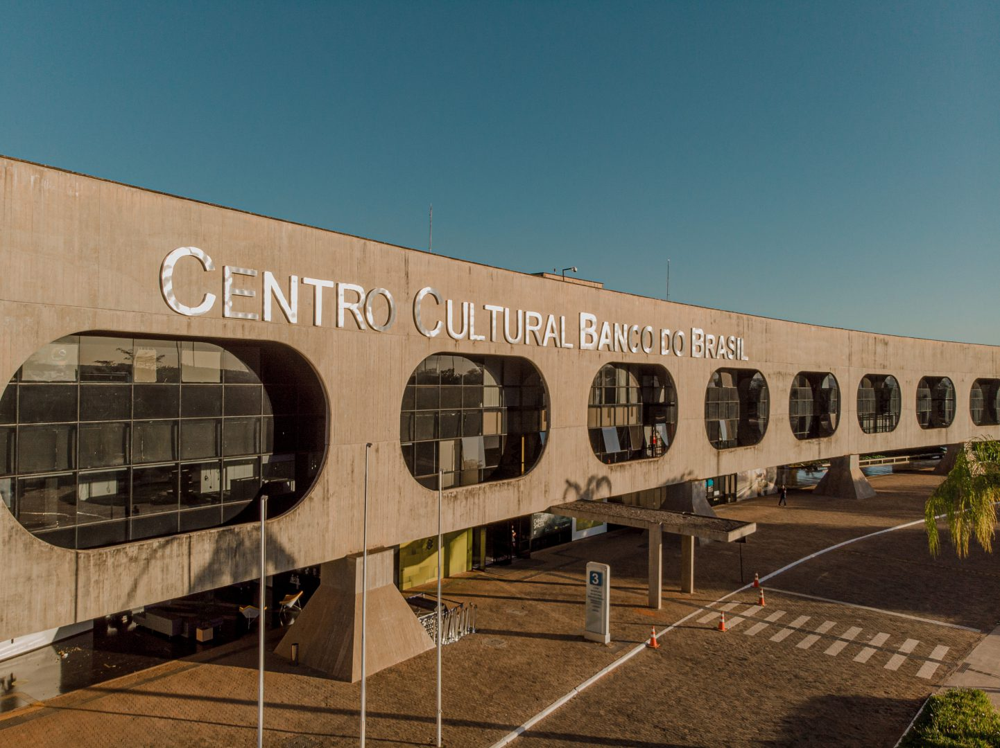

Centro Cultural Banco do Brasil (CCBB Brasília)
Localização: Brasília - DF

Exposições e programação cultural
O CCBB Brasília recebe exposições, cinema, teatro, música e outras atividades culturais. A programação e os horários variam; consulte os canais oficiais antes da visita.